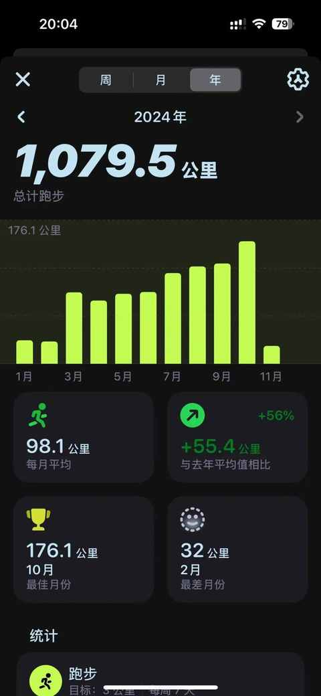
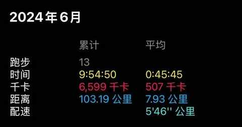
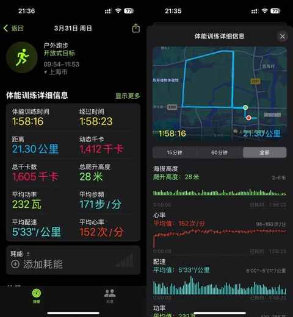
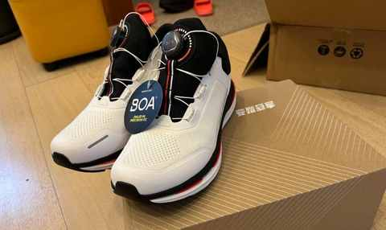
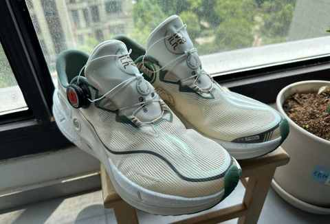
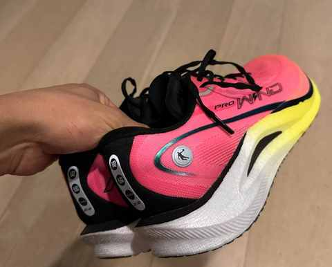
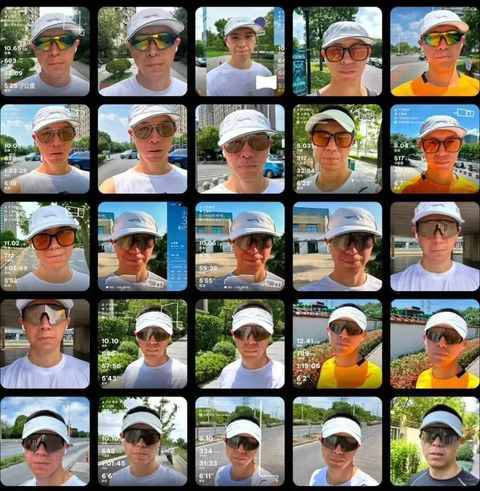
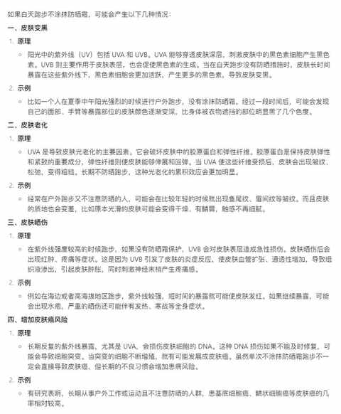
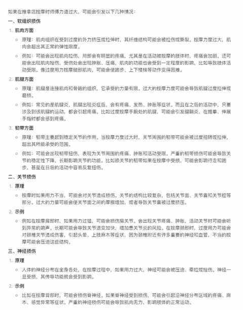
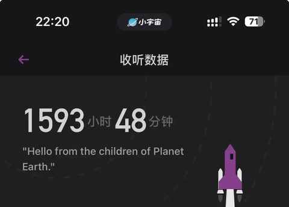

千里之行，始于足下：跑步1000km 后的 5 个感受
有知有觉，在 2024 年跑了1000km！

跑步与骑行最大的不同在于骑行能偶尔划水，能利用重力或速度去滑行一段距离，跑步的时候没有可以划水的时刻，必须摆动双臂一步步迈开腿不断向前。
用跑步的方式完成1000km之后，对 “ 千里之行，始于足下 ”，也有了多一点点的理解和感受。
1. 如果每公里耗时6分钟，总计耗时6000分钟，大约为100个小时，平均到每个月用于跑步的时间是10个小时左右。

2. 跑过的最长一段的距离为21.3km，当天早上起来觉得状态还行，就在日常跑步的路线做了一个谨慎的尝试，甚至把车也停在路边，预备着可能会在10km之后随时放弃。

3. 当跑步成为日常生活的一部分之后，必然克制不了的是购买各种装备，好在现在已经是人到中年比20多岁的时候稳重不少，鞋子只买了 3 双（有一双的鞋底已经跑坏），都是基于实际的需求选购。
个人倾向在预算内买稳定性、湿地防滑性和性能表现上均衡的产品。



除了跑步鞋，跑步袜也是值得投入的装备，基本上大的运动品牌的袜子都挺好，觉得磨损过度再替换即可（推荐李宁、特步、迪卡侬家的袜子）。
如果再叠加几个必需品：
（1）帽子和墨镜
防风、遮阳和吸汗，带反光的版本在夜跑的时候能增加安全性

（2）防晒霜
紫外线对皮肤的伤害超出你的想象，以下是豆包的回答：

4. 与年龄强相关，随着跑步频次的提升，发现日常的放松与拉伸越来越重要，如果去推拿店按摩，一定让师傅注意力道别过大。

在3月份按过一次之后，当时感受上还行，但是恢复肌力花了好几周，中间有小半年都是自己用泡沫状进行的日常放松。
5. 跑步的时候会戴上耳机，90%的时候是听播客而非音乐，建议不用入耳式，用骨传导或者耳夹式。
